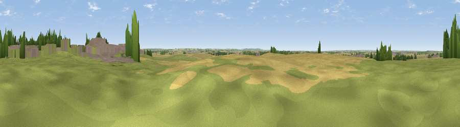

Viewpoint near Dry Doddington
#30035 in England · top 33% of its area beats it · near Dry DoddingtonWhere it is
The exact computed spot (SK 84847 46512). Click the marker for map links.
The view, rendered

A 360° render of this exact spot computed from the terrain model, tree cover and land cover — summer colours, afternoon light, calibrated against photographs of famous viewpoints. Real trees, hedges and buildings will differ in detail.
The panorama
Grey silhouette: terrain skyline in each direction (720 bearings, Earth curvature and refraction included). Dashed green: skyline with trees (+15 m) and buildings (+8 m) as obstacles. Blue strip: how far the ground is visible on each bearing.
Where the view opens
Wedge length = distance to the farthest visible ground on that bearing (vegetation-aware). Rings at 10, 25 and 50 km.
What fills the view
56% cropland · 31% grassland · 7% woodland · 7% built-up
Angular shares of the visible panorama (visual magnitude), not map area. Landscape diversity 0.46 (0–1 Shannon).
Key numbers
More beautiful places nearby
The staircase of upgrades: each row has a higher view potential than everything closer. Driving times are estimates from straight-line distance, calibrated against real road routing — check an actual route before setting out.
| Place | Direction | Drive | Score |
|---|---|---|---|
| Folly Hill | SW · 4 km | ~9 min | 43.2 |
| Viewpoint near Fernwood | NW · 5 km | ~11 min | 47.2 |
| Summerfield's Hill | ESE · 7 km | ~15 min | 48.9 |
| Summerfield's Hill | ESE · 7 km | ~15 min | 51.5 |
| Beacon Hill | SSW · 8 km | ~16 min | 51.8 |
| Viewpoint near Great Gonerby | SE · 8 km | ~17 min | 52.5 |
| Viewpoint near Great Gonerby | SE · 9 km | ~17 min | 62.0 |
| Viewpoint near Belvoir | SSW · 13 km | ~24 min | 70.8 |
53.00921, -0.73690 · source: osm peak · position refined by local search. Computed location — check access rights before visiting.